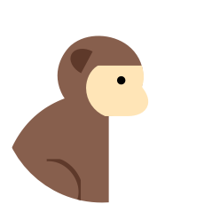
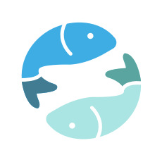

당신의 뜻을 마음껏 펼칠 수 있는 한 해가 될 거에요. 운의 흐름도 유리하고, 주변 여건도 좋은 시기입니다. 당신의 노력만 뒷받침된다면, 남들이 부러워할 만한 성과가 있을 거에요. 평소에 바라던 일, 인생의 목표가 있다면, 이번에 도전해 보세요.
이전페이지
리모콘 이전 버튼모양
다음페이지
리모콘 다음 버튼모양
1/2

원숭이띠
기회를 잘 잡아야 이익을 볼 수 있습니다. 타이밍을 잘 노려야 합니다.
당신에게 좋은 운이 따르고 있으니 용기를 내 움직이세요.
조금은 어려운 일이 생기거나 스트레스가 쌓이는 일이 주위에 있지만 당신의 노력으로 그 모든것을 극복해 낼 수 있습니다.
당신이 하는일마다 그일의 성과가 좋게 나오니 당신 스스로도 오늘 하루는 만족스러운 하루라고 해도 과언이 아닐 것입니다.
기회를 놓치지만 않으면 결과는 당신의 편입니다. 다만 건강상에 무리가 오지 않도록 유의하십시오.

12월30일물고기 자리
기회를 잘 잡아야 이익을 볼 수 있습니다. 타이밍을 잘 노려야 합니다.
당신에게 좋은 운이 따르고 있으니 용기를 내 움직이세요.
조금은 어려운 일이 생기거나 스트레스가 쌓이는 일이 주위에 있지만 당신의 노력으로 그 모든것을 극복해 낼 수 있습니다.
당신이 하는일마다 그일의 성과가 좋게 나오니 당신 스스로도 오늘 하루는 만족스러운 하루라고 해도 과언이 아닐 것입니다.
기회를 놓치지만 않으면 결과는 당신의 편입니다. 다만 건강상에 무리가 오지 않도록 유의하십시오.